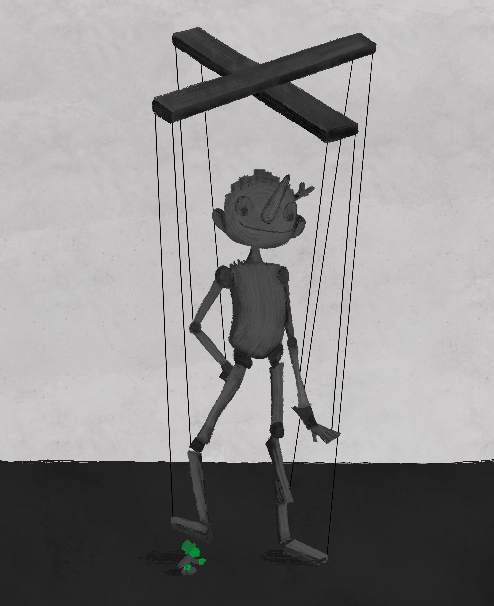
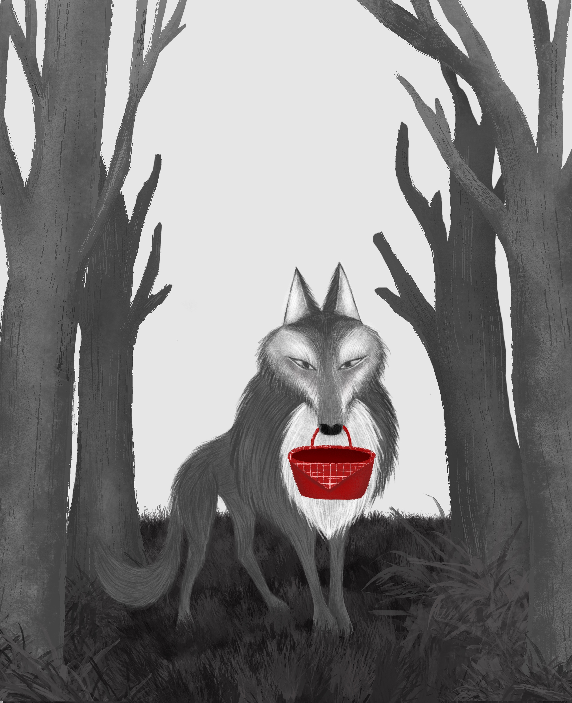
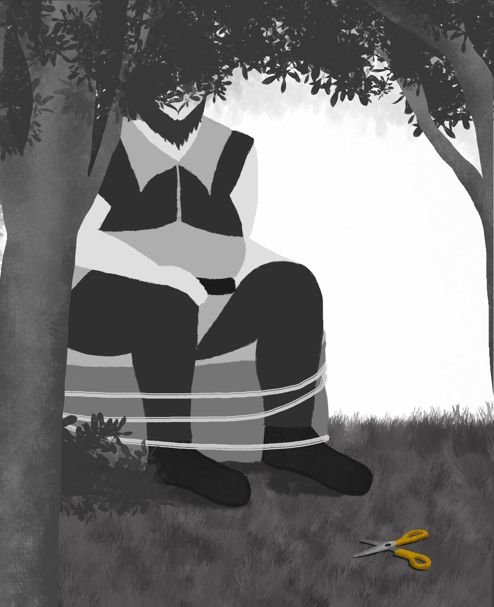

Érase una vez
EN
A collection of three illustrated covers for classic children’s stories: Pinocchio, The Brave Little Tailor and Little Red Riding Hood. Each illustration is created in black and white, highlighting a single object in color as a key element of the story.
ES
Colección de tres portadas ilustradas de cuentos infantiles clásicos: Pinocho, El sastrecillo valiente y Caperucita Roja. Cada ilustración está realizada en blanco y negro, destacando un único objeto en color como elemento protagonista de la historia.





